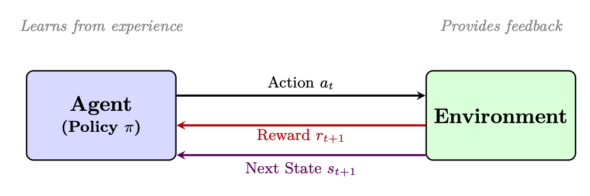
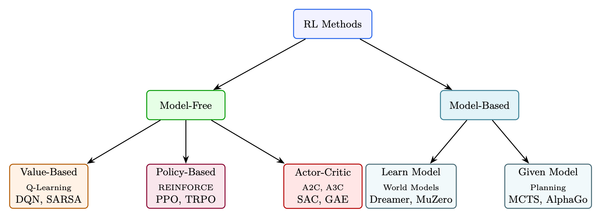
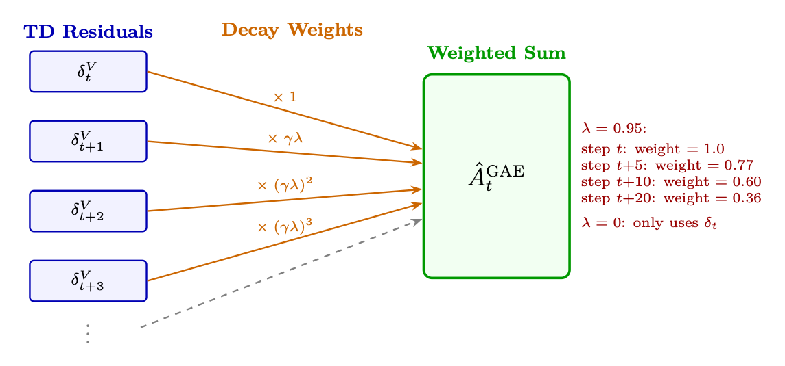

<!doctype html>
<html lang="zh-CN">
<head>
  <meta charset="utf-8" />
  <meta name="viewport" content="width=device-width, initial-scale=1" />
  <title>强化学习简介 | 智能体式 AI 漫游指南</title>
  <meta name="description" content="用 MDP、价值函数、策略梯度和信用分配建立强化学习基础。" />
  <meta property="og:title" content="强化学习简介 | 智能体式 AI 漫游指南" />
  <meta property="og:description" content="用 MDP、价值函数、策略梯度和信用分配建立强化学习基础。" />
  <meta property="og:type" content="article" />
  <link rel="canonical" href="https://conanxin.github.io/hitchhikers-guide-agentic-ai-zh/" />
  <link rel="stylesheet" href="../assets/css/main.css" />
  <link rel="stylesheet" href="../assets/css/article.css" />
  <link rel="stylesheet" href="../assets/css/responsive.css" />
</head>
<body class="article-page">
  <div class="reading-progress" id="reading-progress"></div>
  <header class="topbar">
    <a class="brand" href="../index.html"><span class="brand-mark">AST</span><span><strong>智能体式 AI 漫游指南</strong><small>结构化知识文档系统</small></span></a>
    <button class="nav-toggle" id="nav-toggle" aria-label="打开导航" aria-expanded="false"><span></span><span></span><span></span></button>
    <nav class="topnav" id="topnav"><a class="" href="../index.html">首页</a><a class="active" href="../chapters/index.html">章节</a><a class="" href="../glossary.html">术语表</a><a class="" href="../references.html">参考文献</a><a class="" href="../search.html">搜索</a><a class="" href="https://arxiv.org/pdf/2606.24937v1" target="_blank" rel="noopener">原 PDF</a></nav>
  </header>
  <main class="layout"><aside class="left-nav" id="left-nav"><div class="nav-section-title">语义目录</div><div class="nav-cluster"><strong>导读</strong><a class="chapter-link " href="../chapters/chapter-01.html"><span class="chapter-num">01</span><span>导读与前置说明</span></a><a class="chapter-link " href="../chapters/chapter-09.html"><span class="chapter-num">09</span><span>偏好优化变体</span></a></div><div class="nav-cluster"><strong>LLM 基础与系统</strong><a class="chapter-link " href="../chapters/chapter-02.html"><span class="chapter-num">02</span><span>LLM 架构和优化方法</span></a><a class="chapter-link " href="../chapters/chapter-03.html"><span class="chapter-num">03</span><span>LLM 的系统基础</span></a><a class="chapter-link " href="../chapters/chapter-12.html"><span class="chapter-num">12</span><span>大规模系统架构与基础设施</span></a></div><div class="nav-cluster"><strong>训练、强化学习与对齐</strong><a class="chapter-link active" href="../chapters/chapter-04.html"><span class="chapter-num">04</span><span>强化学习简介</span></a><a class="chapter-link " href="../chapters/chapter-05.html"><span class="chapter-num">05</span><span>语言模型的强化学习基础</span></a><a class="chapter-link " href="../chapters/chapter-06.html"><span class="chapter-num">06</span><span>PPO：近端策略优化</span></a><a class="chapter-link " href="../chapters/chapter-07.html"><span class="chapter-num">07</span><span>DPO：直接偏好优化</span></a><a class="chapter-link " href="../chapters/chapter-08.html"><span class="chapter-num">08</span><span>GRPO：组相对策略优化</span></a><a class="chapter-link " href="../chapters/chapter-10.html"><span class="chapter-num">10</span><span>奖励模型训练</span></a><a class="chapter-link " href="../chapters/chapter-11.html"><span class="chapter-num">11</span><span>SFT 最佳实践与技术</span></a><a class="chapter-link " href="../chapters/chapter-14.html"><span class="chapter-num">14</span><span>大型推理模型的强化学习</span></a></div><div class="nav-cluster"><strong>Agentic AI 系统</strong><a class="chapter-link " href="../chapters/chapter-13.html"><span class="chapter-num">13</span><span>LLM 智能体训练</span></a><a class="chapter-link " href="../chapters/chapter-16.html"><span class="chapter-num">16</span><span>智能体式 AI 简介</span></a><a class="chapter-link " href="../chapters/chapter-17.html"><span class="chapter-num">17</span><span>检索增强生成（RAG）</span></a><a class="chapter-link " href="../chapters/chapter-18.html"><span class="chapter-num">18</span><span>智能体记忆系统</span></a><a class="chapter-link " href="../chapters/chapter-19.html"><span class="chapter-num">19</span><span>智能体执行框架：上下文管理与编排</span></a><a class="chapter-link " href="../chapters/chapter-20.html"><span class="chapter-num">20</span><span>智能体设计模式</span></a><a class="chapter-link " href="../chapters/chapter-21.html"><span class="chapter-num">21</span><span>智能体环境与基准</span></a><a class="chapter-link " href="../chapters/chapter-22.html"><span class="chapter-num">22</span><span>模型上下文协议（MCP）</span></a><a class="chapter-link " href="../chapters/chapter-23.html"><span class="chapter-num">23</span><span>智能体技能</span></a><a class="chapter-link " href="../chapters/chapter-24.html"><span class="chapter-num">24</span><span>智能体间通信（A2A）</span></a><a class="chapter-link " href="../chapters/chapter-25.html"><span class="chapter-num">25</span><span>多智能体系统</span></a><a class="chapter-link " href="../chapters/chapter-26.html"><span class="chapter-num">26</span><span>智能体开发框架</span></a><a class="chapter-link " href="../chapters/chapter-27.html"><span class="chapter-num">27</span><span>智能体式 UI 框架</span></a></div><div class="nav-cluster"><strong>推理与评估</strong><a class="chapter-link " href="../chapters/chapter-15.html"><span class="chapter-num">15</span><span>LLM 评估</span></a></div><div class="nav-cluster"><strong>参考与总结</strong><a class="chapter-link " href="../chapters/chapter-28.html"><span class="chapter-num">28</span><span>测验题与详解</span></a><a class="chapter-link " href="../chapters/chapter-29.html"><span class="chapter-num">29</span><span>速查表</span></a><a class="chapter-link " href="../chapters/chapter-30.html"><span class="chapter-num">30</span><span>结论与未来方向</span></a></div></aside><section class="content-shell">
        <article class="article-card" data-ast-source="../assets/data/clean_chapter_tree.json">
          <header class="article-header">
            <p class="part-label">训练、强化学习与对齐</p>
            <h1>强化学习简介</h1>
            <p>用 MDP、价值函数、策略梯度和信用分配建立强化学习基础。</p>
          </header>
          <aside class="component key-concepts-panel"><span class="component-label">Key Concepts</span><div class="concept-chip"><strong>智能体</strong><span>Agent</span><p>能够感知状态、规划行动、调用工具并迭代完成任务的系统单元。</p></div><div class="concept-chip"><strong>标记 / token</strong><span>Token</span><p>语言模型处理文本的基本离散单位。</p></div><div class="concept-chip"><strong>强化学习</strong><span>Reinforcement Learning</span><p>通过奖励信号优化策略的学习范式。</p></div><div class="concept-chip"><strong>奖励模型</strong><span>Reward Model</span><p>把候选输出映射为偏好或质量分数的模型。</p></div><div class="concept-chip"><strong>策略</strong><span>Policy</span><p>在状态下选择动作或生成 token 的概率分布。</p></div><div class="concept-chip"><strong>轨迹</strong><span>Trajectory</span><p>智能体与环境交互形成的状态、动作、观察和奖励序列。</p></div><div class="concept-chip"><strong>缓冲区</strong><span>Buffer</span><p>保存经验、轨迹或中间数据以供训练和分析的结构。</p></div><div class="concept-chip"><strong>近端策略优化（PPO）</strong><span>PPO</span><p>通过裁剪目标限制策略更新幅度的强化学习算法。</p></div></aside>
          <div class="article-body"><section class="ast-section" id="chapter-04-s01"><div class="component section-overview"><div><span class="component-label">Section Overview</span><h2>马尔可夫决策过程（MDP）</h2><p>本节聚焦“马尔可夫决策过程（MDP）”的定义、机制与工程含义。</p></div><div class="mini-concepts"><div class="concept-chip"><strong>智能体</strong><span>Agent</span><p>能够感知状态、规划行动、调用工具并迭代完成任务的系统单元。</p></div><div class="concept-chip"><strong>强化学习</strong><span>Reinforcement Learning</span><p>通过奖励信号优化策略的学习范式。</p></div><div class="concept-chip"><strong>策略</strong><span>Policy</span><p>在状态下选择动作或生成 token 的概率分布。</p></div></div></div><div class="section-blocks"><p class="content-block paragraph">第三章</p><p class="content-block paragraph">强化介绍 学习</p><p class="content-block paragraph">强化学习 (RL) 是一种智能体学习做出顺序决策的范例 通过与环境交互、接收奖励作为反馈并优化其策略 随着时间的推移最大化累积奖励[158]。与监督学习（需要标记 输入-输出对），强化学习通过反复试验发现最佳行为。</p><p class="content-block paragraph">图 3.1：强化学习概述：智能体与环境交互，接收奖励 通过反复试验反馈并更新其政策。与从标记中学习的监督学习不同 配对后，强化学习通过经验最大化奖励来学习做什么。</p><p class="content-block paragraph">马尔可夫决策过程 (MDP)</p><p class="content-block paragraph">MDP 是一个 5 元组（S、A、P、R、γ）：</p><p class="content-block paragraph">• S：状态空间——环境的所有可能配置</p><p class="content-block paragraph">• A：操作空间 — 智能体可用的所有操作</p><p class="content-block paragraph">• P(s′|s, a)：转移函数 — 采取后从状态 s 到达状态 s′ 的概率 动作一</p><p class="content-block paragraph">• R(s, a, s′)：奖励函数——转换的即时标量反馈</p><p class="content-block paragraph">• γ ε[0, 1]：折扣因子——未来奖励相对于当前奖励的价值是多少</p><p class="content-block paragraph">马尔可夫性质：未来仅取决于当前状态，而不取决于历史：</p><p class="content-block paragraph">P(st+1|st, at, st−1, at−1, ...) = P(st+1|st, at)</p><p class="content-block paragraph">这使得问题变得容易处理。</p><figure class="component figure-component"><figcaption>图示：来自原文档的结构、表格或公式区域。</figcaption></figure></div></section><section class="ast-section" id="chapter-04-s02"><div class="component section-overview"><div><span class="component-label">Section Overview</span><h2>核心概念与定义</h2><p>本节聚焦“核心概念与定义”的定义、机制与工程含义。</p></div><div class="mini-concepts"><div class="concept-chip"><strong>智能体</strong><span>Agent</span><p>能够感知状态、规划行动、调用工具并迭代完成任务的系统单元。</p></div><div class="concept-chip"><strong>策略</strong><span>Policy</span><p>在状态下选择动作或生成 token 的概率分布。</p></div></div></div><div class="section-blocks"><p class="content-block paragraph">智能体-环境交互循环</p><p class="content-block paragraph">在每个时间步 t：</p><p class="content-block paragraph">1. Agent观察状态st</p><p class="content-block paragraph">2. Agent根据策略π(a|s)选择动作at</p><p class="content-block paragraph">3. 环境转变为 st+1 ∼P(·|st, at)</p><div class="component code-component"><div class="block-label">text</div><pre><code>4. Agent收到奖励 rt = R(st, at, st+1)</code></pre></div><p class="content-block paragraph">5. 重复直到终端状态或地平线 T</p><p class="content-block paragraph">核心概念和定义</p><div class="component code-component"><div class="block-label">text</div><pre><code>Policy π(a|s): A mapping from states to action probabilities. Deterministic: a = π(s). Stochastic:
a ∼π(·|s).
Return (cumulative discounted reward):</code></pre></div><p class="content-block paragraph">无穷大 X</p><div class="component formula-component" data-fallback="latex"><div class="block-label">公式</div><pre class="formula"><code>Gt =</code></pre></div><div class="component code-component"><div class="block-label">text</div><pre><code>k=0
γkrt+k = rt + γrt+1 + γ2rt+2 + · · ·
(3.1)</code></pre></div><p class="content-block paragraph">价值函数（策略 π 下状态 s 的预期回报）：</p><p class="content-block paragraph">” ∞ X</p><p class="content-block paragraph">(3.2)</p><div class="component formula-component" data-fallback="latex"><div class="block-label">公式</div><pre class="formula"><code>V π(s) = Eπ [Gt | st = s] = Eπ</code></pre></div><div class="component code-component"><div class="block-label">text</div><pre><code>k=0</code></pre></div><div class="component code-component"><div class="block-label">text</div><pre><code>γkrt+k | st = s</code></pre></div><p class="content-block paragraph">Action-Value Function (expected return from state s, taking action a, then following π):</p><div class="component code-component"><div class="block-label">text</div><pre><code>Qπ(s, a) = Eπ [Gt | st = s, at = a]</code></pre></div><p class="content-block paragraph">(3.3)</p><p class="content-block paragraph">Advantage Function (how much better action a is compared to average):</p><div class="component formula-component" data-fallback="latex"><div class="block-label">公式</div><pre class="formula"><code>Aπ(s, a) = Qπ(s, a) −V π(s) (3.4)</code></pre></div><p class="content-block paragraph">贝尔曼方程（递归关系）：</p><p class="content-block paragraph">V π(s) = X</p><p class="content-block paragraph">一个 π(a|s) X</p><div class="component code-component"><div class="block-label">text</div><pre><code>s′
P(s′|s, a)
R(s, a, s′) + γV π(s′)

(3.5)</code></pre></div><p class="content-block paragraph">Qπ(s, a) = X</p><p class="content-block paragraph">R(s, a, s′) + γ X</p><p class="content-block paragraph">(3.6)</p><p class="content-block paragraph">s′ P(s′|s, a)</p><p class="content-block paragraph">a′ π(a′|s′)Qπ(s′, a′)</p><p class="content-block paragraph">最优策略和贝尔曼最优性</p><div class="component code-component"><div class="block-label">text</div><pre><code>The optimal policy π∗satisfies:</code></pre></div><p class="content-block paragraph">V ∗(s) = max a</p><div class="component code-component"><div class="block-label">text</div><pre><code>s′
P(s′|s, a)
R(s, a, s′) + γV ∗(s′)

(3.7)</code></pre></div><p class="content-block paragraph">Q*(s, a) = X</p><p class="content-block paragraph">s′ P(s′|s, a)  R(s, a, s′) + γ 最大值 a′ Q*(s′, a′)  (3.8)</p><p class="content-block paragraph">一旦 Q* 已知，最优策略就是：π*(s) = arg maxa Q*(s, a)。</p></div></section><section class="ast-section" id="chapter-04-s03"><div class="component section-overview"><div><span class="component-label">Section Overview</span><h2>强化学习方法分类</h2><p>本节聚焦“强化学习方法分类”的定义、机制与工程含义。</p></div><div class="mini-concepts"><div class="concept-chip"><strong>智能体</strong><span>Agent</span><p>能够感知状态、规划行动、调用工具并迭代完成任务的系统单元。</p></div><div class="concept-chip"><strong>强化学习</strong><span>Reinforcement Learning</span><p>通过奖励信号优化策略的学习范式。</p></div><div class="concept-chip"><strong>策略</strong><span>Policy</span><p>在状态下选择动作或生成 token 的概率分布。</p></div><div class="concept-chip"><strong>近端策略优化（PPO）</strong><span>PPO</span><p>通过裁剪目标限制策略更新幅度的强化学习算法。</p></div></div></div><div class="section-blocks"><p class="content-block paragraph">强化学习方法的分类</p><p class="content-block paragraph">强化学习算法可以沿着多个轴进行分类。了解这个分类法 帮助为给定问题选择正确的方法。</p><p class="content-block paragraph">主要分类区别</p><p class="content-block paragraph">无模型与基于模型：</p><p class="content-block paragraph">• 无模型：直接从经验中学习策略或价值函数。不知道 环境动态。对于LLM来说最实用（语言动态很难 模型）。</p><p class="content-block paragraph">• 基于模型：学习或使用环境转换模型P(s′|s, a)。可以提前计划。 样本效率更高，但需要准确的模型。</p><p class="content-block paragraph">基于价值与基于政策：</p><p class="content-block paragraph">• 基于值：学习Q(s, a) 或V (s)，导出策略作为arg maxa Q(s, a)。非常适合 离散的、小的动作空间（例如 Atari）。难以应对连续/大的行动空间。</p><p class="content-block paragraph">• 基于策略：直接参数化和优化πθ(a|s)。自然连续/高 维度行动空间。对于 LLM 至关重要（词汇量 = 32K–128K 操作）。</p><p class="content-block paragraph">• Actor-Critic：结合两者——策略（Actor）提出行动，价值函数（Critic） 评价他们。LLM PPO 是演员批评家。</p><p class="content-block paragraph">在保单与离保单：</p><p class="content-block paragraph">• 符合策略：从当前策略生成的数据中学习。之后必须重新生成数据 每次更新。示例：REINFORCE、PPO、A2C。更稳定，但样品效率较低。</p><p class="content-block paragraph">• 离策略：从任何策略（包括旧版本或其他智能体）生成的数据中学习。 可以重用过去的经验。示例：Q-Learning、DQN、SAC。样本效率更高，但 更难稳定。</p><p class="content-block paragraph">时间差异（TD）学习</p><p class="content-block paragraph">TD学习[159]引导程序——它使用其他价值估计来更新价值估计，而无需 等待整集结束。</p><p class="content-block paragraph">理解 TD 误差：“惊喜”作为学习信号</p><p class="content-block paragraph">TD 误差衡量智能体当前对未来奖励的估计与实际奖励之间的差异 采取一步后最新更新的估计。简单来说，就是两者之间的区别</p><figure class="component figure-component"><figcaption>图示：来自原文档的结构、表格或公式区域。</figcaption></figure></div></section><section class="ast-section" id="chapter-04-s04"><div class="component section-overview"><div><span class="component-label">Section Overview</span><h2>时序差分（TD）学习</h2><p>本节聚焦“时序差分（TD）学习”的定义、机制与工程含义。</p></div><div class="mini-concepts"><div class="concept-chip"><strong>智能体</strong><span>Agent</span><p>能够感知状态、规划行动、调用工具并迭代完成任务的系统单元。</p></div><div class="concept-chip"><strong>强化学习</strong><span>Reinforcement Learning</span><p>通过奖励信号优化策略的学习范式。</p></div><div class="concept-chip"><strong>策略</strong><span>Policy</span><p>在状态下选择动作或生成 token 的概率分布。</p></div><div class="concept-chip"><strong>轨迹</strong><span>Trajectory</span><p>智能体与环境交互形成的状态、动作、观察和奖励序列。</p></div><div class="concept-chip"><strong>近端策略优化（PPO）</strong><span>PPO</span><p>通过裁剪目标限制策略更新幅度的强化学习算法。</p></div></div></div><div class="section-blocks"><p class="content-block paragraph">强化学习方法的分类</p><p class="content-block paragraph">强化学习算法可以沿着多个轴进行分类。了解这个分类法 帮助为给定问题选择正确的方法。</p><p class="content-block paragraph">主要分类区别</p><p class="content-block paragraph">无模型与基于模型：</p><p class="content-block paragraph">• 无模型：直接从经验中学习策略或价值函数。不知道 环境动态。对于LLM来说最实用（语言动态很难 模型）。</p><p class="content-block paragraph">• 基于模型：学习或使用环境转换模型P(s′|s, a)。可以提前计划。 样本效率更高，但需要准确的模型。</p><p class="content-block paragraph">基于价值与基于政策：</p><p class="content-block paragraph">• 基于值：学习Q(s, a) 或V (s)，导出策略作为arg maxa Q(s, a)。非常适合 离散的、小的动作空间（例如 Atari）。难以应对连续/大的行动空间。</p><p class="content-block paragraph">• 基于策略：直接参数化和优化πθ(a|s)。自然连续/高 维度行动空间。对于 LLM 至关重要（词汇量 = 32K–128K 操作）。</p><p class="content-block paragraph">• Actor-Critic：结合两者——策略（Actor）提出行动，价值函数（Critic） 评价他们。LLM PPO 是演员批评家。</p><p class="content-block paragraph">在保单与离保单：</p><p class="content-block paragraph">• 符合策略：从当前策略生成的数据中学习。之后必须重新生成数据 每次更新。示例：REINFORCE、PPO、A2C。更稳定，但样品效率较低。</p><p class="content-block paragraph">• 离策略：从任何策略（包括旧版本或其他智能体）生成的数据中学习。 可以重用过去的经验。示例：Q-Learning、DQN、SAC。样本效率更高，但 更难稳定。</p><p class="content-block paragraph">时间差异（TD）学习</p><p class="content-block paragraph">TD学习[159]引导程序——它使用其他价值估计来更新价值估计，而无需 等待整集结束。</p><p class="content-block paragraph">理解 TD 误差：“惊喜”作为学习信号</p><p class="content-block paragraph">TD 误差衡量智能体当前对未来奖励的估计与实际奖励之间的差异 采取一步后最新更新的估计。简单来说，就是两者之间的区别</p><figure class="component figure-component"><figcaption>图示：来自原文档的结构、表格或公式区域。</figcaption></figure><p class="content-block paragraph">智能体认为会发生的事情以及实际发生的事情加上它接下来期望的事情。它代表 经纪人的“惊喜”。</p><p class="content-block paragraph">直觉：驾驶类比</p><p class="content-block paragraph">想象一下您正开车回家，预计车程需要 30 分钟。</p><p class="content-block paragraph">• 预测：总共30 分钟。</p><p class="content-block paragraph">• 现实转变：10 分钟后，您遇到了意想不到的道路施工。您的全球定位系统 更新，表示现在还剩 35 分钟。</p><p class="content-block paragraph">• TD 错误：预计总时间现在为 45 分钟（已用时间 10 分钟 + 剩余时间 35 分钟）。的 新估计（45 分钟）和旧估计（30 分钟）之间的差异为 +15 分钟 TD 错误。你可以利用这个“惊喜”来改变你下次的路线。</p><p class="content-block paragraph">正 TD 误差意味着结果好于预期 → 提升该状态的价值。</p><p class="content-block paragraph">负 TD 误差意味着情况比预期更差 → 降低该状态的值。</p><p class="content-block paragraph">TD误差公式</p><p class="content-block paragraph">δt = Rt+1 + γV (St+1) −V (St) (3.9)</p><p class="content-block paragraph">• Rt+1：采取行动后立即获得的奖励。</p><p class="content-block paragraph">• γV (St+1)：下一个状态的估计贴现值（智能体期望得到的值） 从下一个状态开始，按折扣因子 γ 缩放）。</p><p class="content-block paragraph">• V (St)：当前状态值的原始估计。</p><p class="content-block paragraph">组合项 (Rt+1 + γV (St+1)) 称为 TD 目标。因此：</p><p class="content-block paragraph">TD 误差 = TD 目标 − 旧估计 (3.10)</p><p class="content-block paragraph">智能体如何使用 TD 错误</p><p class="content-block paragraph">智能体调整其价值函数以使 TD 误差趋向于零：</p><div class="component formula-component" data-fallback="latex"><div class="block-label">公式</div><pre class="formula"><code>V (St) ←V (St) + α · δt (3.11)</code></pre></div><p class="content-block paragraph">• 如果δt &gt; 0：结果好于预测→增加V (St)，因此智能体寻求这种状态。</p><p class="content-block paragraph">• 如果δt &lt; 0：结果比预期更差→降低V (St)，因此智能体避免这种状态。</p><p class="content-block paragraph">• 如果δt = 0：预测是完美的→不需要更新（收敛）。</p><p class="content-block paragraph">TD vs 蒙特卡洛 蒙特卡洛：等到剧集结束，使用实际返回 Gt。无偏但高方差（一 完整的轨迹可能不具有代表性）。 TD：在每一步之后使用估计的未来值 γV (st+1) 进行更新。偏置（取决于V 准确性），但方差要低得多（一步更新，不会复合噪声）。 TD(λ)：在 TD(0) 和蒙特卡罗之间进行插值。 λ = 0：纯 TD。 λ = 1：纯 MC。这是 与 GAE 对 PPO 的作用完全相同（λ = 0.95）。</p><div class="component code-component"><div class="block-label">text</div><pre><code>TD 目标：yt = rt + γV (st+1) — 我们朝着“更好的估计”迈进。</code></pre></div><p class="content-block paragraph">多步 TD（n 步返回）：</p><div class="component formula-component" data-fallback="latex"><div class="block-label">公式</div><pre class="formula"><code>G(n) t = rt + γrt+1 + · · · + γn−1rt+n−1 + γnV (st+n) (3.12)</code></pre></div></div></section><section class="ast-section" id="chapter-04-s05"><div class="component section-overview"><div><span class="component-label">Section Overview</span><h2>Q 学习</h2><p>本节聚焦“Q 学习”的定义、机制与工程含义。</p></div><div class="mini-concepts"><div class="concept-chip"><strong>智能体</strong><span>Agent</span><p>能够感知状态、规划行动、调用工具并迭代完成任务的系统单元。</p></div><div class="concept-chip"><strong>标记 / token</strong><span>Token</span><p>语言模型处理文本的基本离散单位。</p></div><div class="concept-chip"><strong>策略</strong><span>Policy</span><p>在状态下选择动作或生成 token 的概率分布。</p></div><div class="concept-chip"><strong>缓冲区</strong><span>Buffer</span><p>保存经验、轨迹或中间数据以供训练和分析的结构。</p></div><div class="concept-chip"><strong>近端策略优化（PPO）</strong><span>PPO</span><p>通过裁剪目标限制策略更新幅度的强化学习算法。</p></div></div></div><div class="section-blocks"><p class="content-block paragraph">Q-学习</p><p class="content-block paragraph">Q-Learning [160] 是基础的离策略、基于价值的算法。它学习最优的 Q*</p><p class="content-block paragraph">直接，无论遵循什么政策。 更新规则：</p><p class="content-block paragraph">(3.13)</p><div class="component formula-component" data-fallback="latex"><div class="block-label">公式</div><pre class="formula"><code>Q(st, at) ←Q(st, at) + α  rt + γ max a′ Q(st+1, a′) −Q(st, at) </code></pre></div><p class="content-block paragraph">为什么 Q-Learning 是脱离政策的</p><p class="content-block paragraph">更新使用 maxa′ Q(st+1, a′) — 下一个状态的最佳动作的值，无论 智能体实际采取的操作。这意味着目标始终是在 最优策略，即使行为策略是随机探索的（ϵ-贪婪）。 这就是为什么 Q-Learning 可以从重播缓冲区、演示或任何经验来源中学习。 数据不需要来自当前政策。</p><p class="content-block paragraph">SARSA [161]（政策替代）：使用实际采取的行动而不是最大值：</p><div class="component formula-component" data-fallback="latex"><div class="block-label">公式</div><pre class="formula"><code>Q(st, at) ←Q(st, at) + α [rt + γQ(st+1, at+1) −Q(st, at)] (3.14)</code></pre></div><p class="content-block paragraph">深度 Q 网络（DQN）[162]：用神经网络 Qθ(s, a) 替换表格 Q(s, a)。钥匙 创新点：体验重放缓冲区（离策略数据重用）、目标网络（稳定性）、ϵ-贪婪 探索。 DQN 损失函数：训练网络以最小化均方 TD 误差 从重播缓冲区采样的小批量：</p><p class="content-block paragraph">(3.15)</p><p class="content-block paragraph">L(θ) = E(s,a,r,s′)∼B</p><div class="component formula-component" data-fallback="latex"><div class="block-label">公式</div><pre class="formula"><code>&quot; r + γ max a′ Q¯θ(s′, a′) −Qθ(s, a) 2#</code></pre></div><p class="content-block paragraph">其中 Q¯θ 是目标网络 - Qθ 的冻结副本仅每 C 个步骤更新一次（例如，</p><div class="component code-component"><div class="block-label">text</div><pre><code>C = 10,000）。这可以防止移动目标问题：没有它，预测和</code></pre></div><p class="content-block paragraph">目标同时转移，造成发散。 梯度更新：获取损失的梯度。 θ（注：目标 y 被视为 常量 — 没有梯度流过 ¯θ)：</p><p class="content-block paragraph">∇θL = −E</p><div class="component formula-component" data-fallback="latex"><div class="block-label">公式</div><pre class="formula"><code>∇θQθ(s, a)</code></pre></div><div class="component formula-component" data-fallback="latex"><div class="block-label">公式</div><pre class="formula"><code> r + γ max a′ Q¯θ(s′, a′) −Qθ(s, a) </code></pre></div><p class="content-block paragraph"></p><p class="content-block paragraph"> (3.16)</p><p class="content-block paragraph">| {z } TD误差δ</p><div class="component formula-component" data-fallback="latex"><div class="block-label">公式</div><pre class="formula"><code>θ ←θ −α · δ · ∇θQθ(s, a) (3.17)</code></pre></div><p class="content-block paragraph">学习方案（每个训练步骤）：</p><div class="component formula-component" data-fallback="latex"><div class="block-label">公式</div><pre class="formula"><code>1. Act: Select action via ϵ-greedy: with probability ϵ take random action, otherwise a = arg maxa Qθ(s, a). Anneal ϵ from 1.0 →0.01 over first 1M steps.</code></pre></div><p class="content-block paragraph">2. 存储：将过渡(s, a, r, s′, d)保存到重播缓冲区B（容量∼1M）中。</p><p class="content-block paragraph">3. 样本：从 B 中统一抽取 32 个转换的小批量。</p><div class="component code-component"><div class="block-label">text</div><pre><code>4. 计算目标： y = r + γ(1 −d) maxa′ Q¯θ(s′, a′) （如果终端则未来值为零）。</code></pre></div><p class="content-block paragraph">5. 更新：(y −Qθ(s, a))2 上的梯度下降。将梯度剪辑为 [−1, 1]（Huber 损失变体）。</p><div class="component formula-component" data-fallback="latex"><div class="block-label">公式</div><pre class="formula"><code>6. Sync target: Every C steps, copy ¯θ ←θ.</code></pre></div><p class="content-block paragraph">了解重播缓冲区</p><p class="content-block paragraph">重播缓冲区[163]（经验重播）是一种保存过去经验的数据存储机制 以便智能体稍后可以重新学习它们。不是在执行操作后立即丢弃数据，而是 智能体将转换存储在内存库中，并随机抽取小批量样本进行训练。 存储的内容：每个转换都是一个元组：</p><div class="component formula-component" data-fallback="latex"><div class="block-label">公式</div><pre class="formula"><code>et = (st, at, rt, st+1, dt) (3.18)</code></pre></div><p class="content-block paragraph">其中 dt 是一个布尔标志，指示剧集是否结束。</p><p class="content-block paragraph">为什么重放缓冲区至关重要</p><p class="content-block paragraph">• 破坏数据相关性：连续步骤高度相关。神经网络 对顺序数据的概括能力较差。从缓冲区中随机采样生成训练样本 大约 i.i.d.</p><p class="content-block paragraph">• 防止灾难性遗忘：在没有缓冲的情况下，智能体可以通过困难的关卡 可能会忘记如何清除它，同时在接下来的 10K 步中在更高的级别上失败。的 buffer 确保它继续练习旧的场景。</p><p class="content-block paragraph">• 提高样本效率：运行环境可能会很慢。重放缓冲区允许 同一转换中的多个权重更新，从每一步中提取更多价值。</p><div class="component code-component"><div class="block-label">text</div><pre><code>import
random
from
collections
import
deque</code></pre></div><div class="component code-component"><div class="block-label">text</div><pre><code>class
ReplayBuffer:
def
__init__(self , capacity):
self.buffer = deque(maxlen=capacity)
# Bounded
queue</code></pre></div><div class="component code-component"><div class="block-label">text</div><pre><code>def push(self , state , action , reward , next_state , done):</code></pre></div><div class="component code-component"><div class="block-label">text</div><pre><code>self.buffer.append ((state , action , reward , next_state , done))</code></pre></div><div class="component code-component"><div class="block-label">text</div><pre><code>def sample(self , batch_size):</code></pre></div><div class="component code-component"><div class="block-label">text</div><pre><code># Break
correlation by selecting
random
experiences
return
random.sample(self.buffer , batch_size)</code></pre></div><div class="component code-component"><div class="block-label">text</div><pre><code>def
__len__(self):
return len(self.buffer)</code></pre></div><p class="content-block paragraph">优先体验重播 (PER)</p><p class="content-block paragraph">在标准缓冲区中，所有经验都具有相同的采样概率。但有些则更多 教育性的。 PER [164] 通过 TD 误差幅度缩放采样概率 — 如果发生转变 引起巨大的“惊喜”（高 |δt|），智能体更频繁地对其进行采样以纠正其模型 更快。这使得 Atari 基准测试测试的学习速度提高了 2-3 倍。</p><p class="content-block paragraph">为什么 Q-Learning 对 LLM 来说失败了</p><p class="content-block paragraph">语言生成中的动作空间是完整词汇表（|A| = 32K–128K），状态 空间是所有可能的标记序列（无限）。每次计算超过 128K 个动作的 maxa Q(s, a) token位置是棘手的。这就是 LLM RL 使用基于策略的方法（PPO、GRPO）的原因 相反。</p></div></section><section class="ast-section" id="chapter-04-s06"><div class="component section-overview"><div><span class="component-label">Section Overview</span><h2>策略梯度方法：REINFORCE</h2><p>本节聚焦“策略梯度方法：REINFORCE”的定义、机制与工程含义。</p></div><div class="mini-concepts"><div class="concept-chip"><strong>策略</strong><span>Policy</span><p>在状态下选择动作或生成 token 的概率分布。</p></div><div class="concept-chip"><strong>轨迹</strong><span>Trajectory</span><p>智能体与环境交互形成的状态、动作、观察和奖励序列。</p></div></div></div><div class="section-blocks"><p class="content-block paragraph">策略梯度方法——REINFORCE</p><p class="content-block paragraph">不学习价值函数并推导策略，而是直接优化策略参数 θ 最大化预期回报[165]。</p><div class="component formula-component" data-fallback="latex"><div class="block-label">公式</div><pre class="formula"><code>Objective: J(θ) = Eτ∼πθ[R(τ)] = Eπθ hPT t=0 rt i</code></pre></div><p class="content-block paragraph">政策梯度定理：</p><p class="content-block paragraph">” T X</p><p class="content-block paragraph">(3.19)</p><div class="component formula-component" data-fallback="latex"><div class="block-label">公式</div><pre class="formula"><code>∇θJ(θ) = Eπθ</code></pre></div><div class="component formula-component" data-fallback="latex"><div class="block-label">公式</div><pre class="formula"><code>t=0 ∇θ log πθ(at|st) · Gt</code></pre></div><p class="content-block paragraph">策略梯度定理 - 形式推导（5 个步骤）</p><p class="content-block paragraph">第 1 步：定义目标。我们希望最大化预期回报：</p><p class="content-block paragraph">” T X</p><div class="component formula-component" data-fallback="latex"><div class="block-label">公式</div><pre class="formula"><code>= X</code></pre></div><div class="component formula-component" data-fallback="latex"><div class="block-label">公式</div><pre class="formula"><code>J(θ) = Eτ∼πθ</code></pre></div><div class="component formula-component" data-fallback="latex"><div class="block-label">公式</div><pre class="formula"><code>τ P(τ|θ)R(τ)</code></pre></div><p class="content-block paragraph">时间=0 室温</p><div class="component formula-component" data-fallback="latex"><div class="block-label">公式</div><pre class="formula"><code>where P(τ|θ) = p(s0) QT t=0 πθ(at|st) p(st+1|st, at) is the trajectory probability. Step 2: Take the gradient. Only πθ terms depend on θ (dynamics p doesn’t):</code></pre></div><p class="content-block paragraph">∇θJ = X</p><div class="component formula-component" data-fallback="latex"><div class="block-label">公式</div><pre class="formula"><code>τ ∇θP(τ|θ) R(τ)</code></pre></div><div class="component formula-component" data-fallback="latex"><div class="block-label">公式</div><pre class="formula"><code>Step 3: Apply the log-derivative trick: ∇θP(τ|θ) = P(τ|θ) ∇θ log P(τ|θ):</code></pre></div><div class="component formula-component" data-fallback="latex"><div class="block-label">公式</div><pre class="formula"><code>∇θJ = Eτ∼πθ[∇θ log P(τ|θ) R(τ)]</code></pre></div><div class="component formula-component" data-fallback="latex"><div class="block-label">公式</div><pre class="formula"><code>Step 4: Expand log P(τ|θ). The log p(s0) and log p(st+1|st, at) terms vanish under ∇θ:</code></pre></div><p class="content-block paragraph">时间 X</p><div class="component formula-component" data-fallback="latex"><div class="block-label">公式</div><pre class="formula"><code>∇θ log P(τ|θ) =</code></pre></div><div class="component formula-component" data-fallback="latex"><div class="block-label">公式</div><pre class="formula"><code>t=0 ∇θ log πθ(at|st)</code></pre></div><div class="component code-component"><div class="block-label">text</div><pre><code>Step 5: Combine. Future rewards don’t depend on past actions (causality), so each ∇log π pairs
only with future return Gt = PT
t′=t rt′:</code></pre></div><p class="content-block paragraph">” T X</p><div class="component formula-component" data-fallback="latex"><div class="block-label">公式</div><pre class="formula"><code>∇θJ = Eπθ</code></pre></div><div class="component formula-component" data-fallback="latex"><div class="block-label">公式</div><pre class="formula"><code>t=0 ∇θ log πθ(at|st) · Gt</code></pre></div><p class="content-block paragraph">为什么这很美丽</p><p class="content-block paragraph">梯度不需要通过环境动力学 p(s′|s, a) 进行微分。 对数导数技巧将其转换为我们可以通过简单地运行来估计的期望</p><div class="component code-component"><div class="block-label">text</div><pre><code>政策和观察奖励。用优势 ^At = Gt −V (st) 代替 Gt 可以减少方差</code></pre></div><p class="content-block paragraph">无偏差（因为对于任何状态相关基线，E[∇log π · b(s)] = 0）。</p><p class="content-block paragraph">强化算法 [165]（Williams，1992）：</p><div class="component formula-component" data-fallback="latex"><div class="block-label">公式</div><pre class="formula"><code>1. Sample complete trajectory τ = (s0, a0, r0, s1, a1, r1, . . .) under πθ</code></pre></div><div class="component code-component"><div class="block-label">text</div><pre><code>2. 计算收益 Gt = PT−t</code></pre></div><div class="component code-component"><div class="block-label">text</div><pre><code>每个时间步 k=0 γkrt+k</code></pre></div><div class="component formula-component" data-fallback="latex"><div class="block-label">公式</div><pre class="formula"><code>3. Update: θ ←θ + α P t ∇θ log πθ(at|st) · Gt</code></pre></div><p class="content-block paragraph">强化直觉——“奖励加权最大似然”</p><div class="component formula-component" data-fallback="latex"><div class="block-label">公式</div><pre class="formula"><code>∇θ log πθ(at|st) is the direction that increases the probability of action at. Multiplying by Gt means:</code></pre></div></div></section><section class="ast-section" id="chapter-04-s07"><div class="component section-overview"><div><span class="component-label">Section Overview</span><h2>Actor-Critic 方法</h2><p>本节聚焦“Actor-Critic 方法”的定义、机制与工程含义。</p></div><div class="mini-concepts"><div class="concept-chip"><strong>策略</strong><span>Policy</span><p>在状态下选择动作或生成 token 的概率分布。</p></div><div class="concept-chip"><strong>轨迹</strong><span>Trajectory</span><p>智能体与环境交互形成的状态、动作、观察和奖励序列。</p></div><div class="concept-chip"><strong>近端策略优化（PPO）</strong><span>PPO</span><p>通过裁剪目标限制策略更新幅度的强化学习算法。</p></div><div class="concept-chip"><strong>组相对策略优化（GRPO）</strong><span>GRPO</span><p>基于同一提示多条响应的组内相对优势进行优化的方法。</p></div></div></div><div class="section-blocks"><p class="content-block paragraph">• 高回报轨迹：增加采取所有行动的概率（正 Gt）</p><p class="content-block paragraph">• 低回报轨迹：降低采取行动的概率（基线后 Gt 为负）</p><p class="content-block paragraph">这是监督学习，其中“标签”是你采取的行动，根据它们的好坏程度进行加权 原来是。</p><p class="content-block paragraph">与基线的方差减少：</p><p class="content-block paragraph">” T X</p><p class="content-block paragraph">(3.20)</p><div class="component formula-component" data-fallback="latex"><div class="block-label">公式</div><pre class="formula"><code>∇θJ(θ) = Eπθ</code></pre></div><div class="component formula-component" data-fallback="latex"><div class="block-label">公式</div><pre class="formula"><code>t=0 ∇θ log πθ(at|st) · (Gt −b(st))</code></pre></div><div class="component formula-component" data-fallback="latex"><div class="block-label">公式</div><pre class="formula"><code>Any baseline b(st) that doesn’t depend on at keeps the gradient unbiased but reduces variance. Best choice: b(st) = V π(st). Then Gt −V (st) ≈Aπ(st, at) = advantage.</code></pre></div><p class="content-block paragraph">强化限制</p><p class="content-block paragraph">• 高方差：每个梯度使用一条轨迹。稳定需要数千个样本 更新。</p><p class="content-block paragraph">• 无引导：必须等待完整剧集（无部分制作人员）。</p><p class="content-block paragraph">• 样本效率低下：数据使用一次后就被丢弃（符合策略）。</p><p class="content-block paragraph">• 无步长控制：可能采取灾难性的大政策步长。</p><div class="component formula-component" data-fallback="latex"><div class="block-label">公式</div><pre class="formula"><code>These limitations motivate the progression: REINFORCE →Actor-Critic →TRPO →PPO.</code></pre></div><p class="content-block paragraph">演员批评家方法</p><p class="content-block paragraph">将策略梯度（参与者）与学习价值函数（批评者）相结合，以减少方差，同时主要- 保持政策优化的灵活性。 架构：</p><p class="content-block paragraph">• Actor πθ(a|s)：策略。提出行动建议。</p><p class="content-block paragraph">• Critic V phi(s) 或Q phi(s, a)：评估状态/动作的好坏。提供低方差基线。</p><p class="content-block paragraph">演员更新（利用评论家的优势）：</p><div class="component formula-component" data-fallback="latex"><div class="block-label">公式</div><pre class="formula"><code>∇θJ = E h ∇θ log πθ(at|st) · ˆAt i , ˆAt = rt + γVϕ(st+1) −Vϕ(st) (3.21)</code></pre></div><p class="content-block paragraph">评论家更新（最小化 TD 误差）：</p><p class="content-block paragraph">批评家= E 小时 (rt + γVψ(st+1) −Vψ(st))2i (3.22)</p><p class="content-block paragraph">LLM 向 PPO 的演变</p><p class="content-block paragraph">1. REINFORCE [165]：高方差，无引导→对于LLM来说不切实际</p><p class="content-block paragraph">2. A2C/A3C [166]（优势演员-评论家）：使用基于 TD 的优势。较低的方差。但是 无限的步长。</p><p class="content-block paragraph">3. TRPO[167]：限制策略更新之间的KL分歧。稳定但价格昂贵 （二阶）。</p><p class="content-block paragraph">4. PPO[168]：削减政策比率以实现与一阶 TRPO 类似的稳定性 仅优化。 LLM RL 训练标准。</p><p class="content-block paragraph">5. GRPO：完全消除批评者。使用组统计数据作为基线。更简单有效 以获得可验证的奖励。</p></div></section><section class="ast-section" id="chapter-04-s08"><div class="component section-overview"><div><span class="component-label">Section Overview</span><h2>广义优势估计（GAE）</h2><p>本节聚焦“广义优势估计（GAE）”的定义、机制与工程含义。</p></div><div class="mini-concepts"><div class="concept-chip"><strong>标记 / token</strong><span>Token</span><p>语言模型处理文本的基本离散单位。</p></div><div class="concept-chip"><strong>策略</strong><span>Policy</span><p>在状态下选择动作或生成 token 的概率分布。</p></div><div class="concept-chip"><strong>轨迹</strong><span>Trajectory</span><p>智能体与环境交互形成的状态、动作、观察和奖励序列。</p></div></div></div><div class="section-blocks"><p class="content-block paragraph">动机：Actor-Critic 框架需要很好地估计优势 A(s, a) = Q(s, a) −V (s) — 这个动作比平均水平好多少？但存在一个根本性的张力：</p><p class="content-block paragraph">• 1 步 TD 优势 (rt + γV (st+1) −V (st))：低方差（仅一个随机步骤），但 有偏差——如果价值函数 V 错误，则优势估计会系统性地偏离。</p><p class="content-block paragraph">• 蒙特卡洛优势 (Gt −V (st))：无偏（使用实际回报），但方差较高 — 许多随机奖励的总和在不同情节之间波动很大。</p><p class="content-block paragraph">GAE [169]（Schulman et al., 2016）提供了这些极端值之间的平滑插值 通过单个参数 λ ∈[0, 1]。它采用 n 步优势的指数加权平均值 对所有 n 的估计，给出了一种用偏差换取方差的原则方法。 核心思想：计算每个时间步的1步TD误差δt，然后将它们以指数方式混合 衰减权重 (γλ)l — 最近的 TD 误差获得全部权重，远处的误差被降低权重：</p><p class="content-block paragraph">T−t X</p><p class="content-block paragraph">^阿盖尔 t =</p><div class="component code-component"><div class="block-label">text</div><pre><code>l=0
(γλ)lδt+l,
δt = rt + γV (st+1) −V (st)
(3.23)</code></pre></div><div class="component formula-component" data-fallback="latex"><div class="block-label">公式</div><pre class="formula"><code>Figure 3.2: GAE data flow: each TD residual δV t+l is weighted by (γλ)l before summation. Higher λ includes more future residuals (lower bias, higher variance).</code></pre></div><p class="content-block paragraph">λ 控制什么——偏差-方差权衡</p><div class="component formula-component" data-fallback="latex"><div class="block-label">公式</div><pre class="formula"><code>• λ = 0: ˆAt = δt = rt + γV (st+1) −V (st). Trust value function completely. Low variance, but biased if V is inaccurate.</code></pre></div><div class="component code-component"><div class="block-label">text</div><pre><code>• λ = 1：At = P</code></pre></div><p class="content-block paragraph">l γlrt+l -V (st)。完整的蒙特卡罗回报减去基线。不偏不倚但非常 高方差。</p><p class="content-block paragraph">• λ = 0.95（标准）：最佳点。主要信任 V，但会根据遥远的实际回报进行修正 影响。之所以有效，是因为在初始训练后，值头变得准确。</p><p class="content-block paragraph">特别是对于LLM：γ = 1.0（没有时间折扣——所有token在单回合中同等重要）， λ = 0.95。</p><p class="content-block paragraph">GAE 中偏差和方差的直观映射</p><p class="content-block paragraph">在监督学习中，偏差和方差源于结构模型假设。加固中 通过 GAE 学习，它们源于您对有缺陷的模型的信任程度与您的信任程度 信任混乱的环境：</p><figure class="component figure-component"><figcaption>图示：来自原文档的结构、表格或公式区域。</figcaption></figure><p class="content-block paragraph">• 偏差（系统性偏差）：当估计器依赖于结构假设时就会出现偏差。 系统蒸发散和价值网络 Vθ 的不完美预测。如果 θ 训练不足或缺乏能力， 基线猜测在系统上是错误的。</p><p class="content-block paragraph">• 方差（样本抖动）：当估计器依赖于长的、无约束的 环境轨迹。随机转换、随机种子和策略执行噪声 长期积累，导致经验样本奖励在 推出。</p><p class="content-block paragraph">建筑谱系：边界分析</p><p class="content-block paragraph">图 3.3：GAE 中的偏差与方差：λ 控制权衡。小 λ（左）产生高偏差/低方差 通过引导；使用完整的蒙特卡罗回报，大 λ（右）产生低偏差/高方差。最优的 choice (λ ∈[0.9, 0.95]) 平衡了稳定的训练和准确的长期学分分配。</p><p class="content-block paragraph">超参数 λ 充当两个基本估计范式之间的计算尺。</p><p class="content-block paragraph">高偏差/低方差限制 (λ = 0)</p><div class="component formula-component" data-fallback="latex"><div class="block-label">公式</div><pre class="formula"><code>ˆAGAE(γ,0) t = δV t = rt + γVθ(st+1) −Vθ(st) (3.24)</code></pre></div><p class="content-block paragraph">• 行为：优势很大程度上取决于参数θ 的当前状态。</p><p class="content-block paragraph">• 直觉：高度偏差，因为网络通过 1 步来对自己的性能进行评分 窗户；如果 Vθ 不准确，则梯度步长会损坏。方差低，因为它忽略了 步骤 t+1 之外的未来随机事件，导致平滑、稳定的参数更新。</p><p class="content-block paragraph">• 风险：次优局部最小值的政策陷阱——从未发现复杂的延迟奖励 序列。</p><p class="content-block paragraph">低偏差/高方差限制 (λ = 1)</p><p class="content-block paragraph">无穷大 X</p><p class="content-block paragraph">当 λ = 1 时，中间值项伸缩取消，将 GAE 简化为蒙特卡罗回归 减去基线： ^AGAE(γ,1) t =</p><div class="component code-component"><div class="block-label">text</div><pre><code>l=0
γlrt+l −Vθ(st)
(3.25)</code></pre></div><p class="content-block paragraph">• 行为：放弃引导程序前瞻并总结整个系统的实际情况 情节。</p><p class="content-block paragraph">• 直觉：对于真实的环境动态完全公正——措施 实际奖励而不是神经近似。然而，表现出极大的差异：</p><figure class="component figure-component"><figcaption>图示：来自原文档的结构、表格或公式区域。</figcaption></figure></div></section><section class="ast-section" id="chapter-04-s09"><div class="component section-overview"><div><span class="component-label">Section Overview</span><h2>在线策略与离线策略：详细比较</h2><p>本节聚焦“在线策略与离线策略：详细比较”的定义、机制与工程含义。</p></div><div class="mini-concepts"><div class="concept-chip"><strong>智能体</strong><span>Agent</span><p>能够感知状态、规划行动、调用工具并迭代完成任务的系统单元。</p></div><div class="concept-chip"><strong>策略</strong><span>Policy</span><p>在状态下选择动作或生成 token 的概率分布。</p></div><div class="concept-chip"><strong>轨迹</strong><span>Trajectory</span><p>智能体与环境交互形成的状态、动作、观察和奖励序列。</p></div><div class="concept-chip"><strong>缓冲区</strong><span>Buffer</span><p>保存经验、轨迹或中间数据以供训练和分析的结构。</p></div><div class="concept-chip"><strong>近端策略优化（PPO）</strong><span>PPO</span><p>通过裁剪目标限制策略更新幅度的强化学习算法。</p></div></div></div><div class="section-blocks"><p class="content-block paragraph">事件早期的微小扰动可能会导致完全不同的总回报， 导致政策更新变得不稳定。</p><p class="content-block paragraph">• 风险：破坏性的梯度更新；训练爆炸。</p><p class="content-block paragraph">权衡矩阵</p><p class="content-block paragraph">通过选择 λ ∈[0.95, 0.99]，GAE 最小化优势估计的总均方误差：</p><p class="content-block paragraph">表 3.1：GAE 参数选择的操作比较。</p><p class="content-block paragraph">配置 统计属性 领带 核心信赖 实际风险</p><p class="content-block paragraph">λ = 0 高偏差，低变化 安斯 型号 参数 (θ) 次优局部最小化的政策陷阱 今 λ ε[0.95, 0.99] 平衡 （最佳 均方误差） 混合混合 需要根据环境进行调整 心理随机性 λ = 1 低偏置，高变化 安斯 经验主义 环境- 更换推出 破坏性的梯度更新；火车- 爆炸</p><p class="content-block paragraph">调整 λ 的诊断</p><p class="content-block paragraph">监控训练曲线可以直接了解偏差或方差是否占主导地位：</p><p class="content-block paragraph">1. 高方差指标：政策熵急剧下降，而解释方差为 价值函数变得高度负值或不稳定→政策更新充满噪音。补救措施： 降低 λ 以平滑目标更新。</p><p class="content-block paragraph">2. 高偏差指标：Agent 实现早期稳定训练，但完全无法发现 复杂的延迟奖励序列→由于长期依赖关系而低估 引导。补救措施：将 λ 提高到接近 1.0，以使策略暴露于真实的下游轨迹 信号。</p><p class="content-block paragraph">On-Policy 与 Off-Policy — 详细比较</p><p class="content-block paragraph">在保单 政策外</p><p class="content-block paragraph">数据来源 仅当前政策 πθ 任何策略（重放缓冲区） 更新后 旧数据无效，必须重新 生成 旧数据仍然可用</p><p class="content-block paragraph">样品效率 低（数据使用一次） 高（数据重复使用多次） 稳定性 更稳定（一致的分配 布丁） 可能发散（分布不匹配）</p><p class="content-block paragraph">示例 加强， 聚苯醚， A2C， GRPO Q-学习、DQN、SAC、DPO</p><p class="content-block paragraph">对于LLM PPO、GRPO（产生新鲜 每一步） DPO（静态偏好数据集）</p><p class="content-block paragraph">RLHF 方法的开启/关闭策略</p><p class="content-block paragraph">PPO/GRPO 符合策略：根据当前策略生成响应、计算优势、 更新，丢弃数据，重新生成。这就是为什么生成占计算量的 60%——你重新生成 每一步。 DPO 是脱离策略的：在固定偏好数据集上进行训练。训练期间没有生成。很多 更便宜，但会受到分配转移的影响（随着政策的变化，数据会变得陈旧）。 在线 DPO 是一种混合体：生成新数据（策略生成）但使用 DPO 的监督</p></div></section><section class="ast-section" id="chapter-04-s10"><div class="component section-overview"><div><span class="component-label">Section Overview</span><h2>基于模型与无模型方法</h2><p>本节聚焦“基于模型与无模型方法”的定义、机制与工程含义。</p></div><div class="mini-concepts"><div class="concept-chip"><strong>智能体</strong><span>Agent</span><p>能够感知状态、规划行动、调用工具并迭代完成任务的系统单元。</p></div><div class="concept-chip"><strong>奖励模型</strong><span>Reward Model</span><p>把候选输出映射为偏好或质量分数的模型。</p></div><div class="concept-chip"><strong>策略</strong><span>Policy</span><p>在状态下选择动作或生成 token 的概率分布。</p></div><div class="concept-chip"><strong>轨迹</strong><span>Trajectory</span><p>智能体与环境交互形成的状态、动作、观察和奖励序列。</p></div><div class="concept-chip"><strong>近端策略优化（PPO）</strong><span>PPO</span><p>通过裁剪目标限制策略更新幅度的强化学习算法。</p></div></div></div><div class="section-blocks"><p class="content-block paragraph">损失（离策略式优化）。获得两者的好处。</p><div class="component code-component"><div class="block-label">text</div><pre><code>PPO 的聪明之处在于：使用裁剪比 r = πnew/πold 从一个梯度中压缩多个梯度</code></pre></div><p class="content-block paragraph">一批符合政策的数据（4 个时期），使其以受控方式“稍微偏离政策”。</p><p class="content-block paragraph">基于模型与无模型</p><p class="content-block paragraph">无模型 基于模型的</p><p class="content-block paragraph">学到了什么 策略 π 和/或价值 V /Q di- 正确地 环境模型 ˆP(s′|s, a)</p><p class="content-block paragraph">规划 没有计划，反应性决策 可以模拟未来的轨迹 样品效率 低（必须经历每一个- 事） 高（可以想象计划）</p><p class="content-block paragraph">准确度 无模型偏差 模型误差复合 何时使用 复杂/未知的动态 简单的动态，需要效率 示例 PPO、DQN、SAC [170] MuZero [171]、梦想家 [172]、AlphaGo [19]</p><p class="content-block paragraph">为什么 LLM RL 是无模型的</p><p class="content-block paragraph">语言生成动态是微不足道的（将标记附加到序列 - 确定性转换）。 环境的“模型”不是瓶颈。困难的是奖励——预测 人类会更喜欢什么。这使得 LLM RL 不需要基于模型的方法。 RLHF 中的奖励模型在某种意义上可以被视为一个“模型”（它预测人类的偏好）， 但它被用作奖励信号，而不是用于规划/模拟。 LLM RL 基本上是无模型的 政策优化。</p><p class="content-block paragraph">奖励塑造</p><p class="content-block paragraph">奖励塑造[173]是一种开发人员修改或补充环境的技术 原始奖励函数。其主要目标是改变稀疏奖励场景——其中 智能体仅在最终任务完成时收到反馈 - 进入密集奖励场景 中间反馈信号加速收敛。</p><p class="content-block paragraph">数学框架</p><div class="component code-component"><div class="block-label">text</div><pre><code>Let the original reward at time step t be Rt(s, a, s′). The reshaped reward adds an auxiliary shaping
function F:
R′
t(s, a, s′) = Rt(s, a, s′) + F(s, a, s′)
(3.26)</code></pre></div><p class="content-block paragraph">天真的重塑的风险：奖励黑客</p><p class="content-block paragraph">如果任意设计 F(s, a, s′)，智能体就会找到结构漏洞来最大化辅助 发出信号而忽视全球目标。 示例：因到达中间地标而获得奖励的导航智能体可能会学习循环 无限期地围绕一个检查点来积累无限的奖励——而无需达到 目的地。 在LLM中：因“听起来自信”而获得奖励的模型可能会学会始终以“绝对！”开始 无论准确性如何。</p><p class="content-block paragraph">基于潜力的奖励塑造（PBRS）</p><div class="component formula-component" data-fallback="latex"><div class="block-label">公式</div><pre class="formula"><code>To mathematically guarantee that reshaping does not alter the optimal policy, use Potential-Based Reward Shaping. The shaping function F is constrained to the difference in a scalar potential function Φ across states: F(s, a, s′) = γ Φ(s′) −Φ(s) (3.27)</code></pre></div></div></section><section class="ast-section" id="chapter-04-s11"><div class="component section-overview"><div><span class="component-label">Section Overview</span><h2>奖励塑形</h2><p>本节聚焦“奖励塑形”的定义、机制与工程含义。</p></div><div class="mini-concepts"><div class="concept-chip"><strong>智能体</strong><span>Agent</span><p>能够感知状态、规划行动、调用工具并迭代完成任务的系统单元。</p></div><div class="concept-chip"><strong>强化学习</strong><span>Reinforcement Learning</span><p>通过奖励信号优化策略的学习范式。</p></div><div class="concept-chip"><strong>奖励模型</strong><span>Reward Model</span><p>把候选输出映射为偏好或质量分数的模型。</p></div><div class="concept-chip"><strong>策略</strong><span>Policy</span><p>在状态下选择动作或生成 token 的概率分布。</p></div><div class="concept-chip"><strong>轨迹</strong><span>Trajectory</span><p>智能体与环境交互形成的状态、动作、观察和奖励序列。</p></div></div></div><div class="section-blocks"><p class="content-block paragraph">损失（离策略式优化）。获得两者的好处。</p><div class="component code-component"><div class="block-label">text</div><pre><code>PPO 的聪明之处在于：使用裁剪比 r = πnew/πold 从一个梯度中压缩多个梯度</code></pre></div><p class="content-block paragraph">一批符合政策的数据（4 个时期），使其以受控方式“稍微偏离政策”。</p><p class="content-block paragraph">基于模型与无模型</p><p class="content-block paragraph">无模型 基于模型的</p><p class="content-block paragraph">学到了什么 策略 π 和/或价值 V /Q di- 正确地 环境模型 ˆP(s′|s, a)</p><p class="content-block paragraph">规划 没有计划，反应性决策 可以模拟未来的轨迹 样品效率 低（必须经历每一个- 事） 高（可以想象计划）</p><p class="content-block paragraph">准确度 无模型偏差 模型误差复合 何时使用 复杂/未知的动态 简单的动态，需要效率 示例 PPO、DQN、SAC [170] MuZero [171]、梦想家 [172]、AlphaGo [19]</p><p class="content-block paragraph">为什么 LLM RL 是无模型的</p><p class="content-block paragraph">语言生成动态是微不足道的（将标记附加到序列 - 确定性转换）。 环境的“模型”不是瓶颈。困难的是奖励——预测 人类会更喜欢什么。这使得 LLM RL 不需要基于模型的方法。 RLHF 中的奖励模型在某种意义上可以被视为一个“模型”（它预测人类的偏好）， 但它被用作奖励信号，而不是用于规划/模拟。 LLM RL 基本上是无模型的 政策优化。</p><p class="content-block paragraph">奖励塑造</p><p class="content-block paragraph">奖励塑造[173]是一种开发人员修改或补充环境的技术 原始奖励函数。其主要目标是改变稀疏奖励场景——其中 智能体仅在最终任务完成时收到反馈 - 进入密集奖励场景 中间反馈信号加速收敛。</p><p class="content-block paragraph">数学框架</p><div class="component code-component"><div class="block-label">text</div><pre><code>Let the original reward at time step t be Rt(s, a, s′). The reshaped reward adds an auxiliary shaping
function F:
R′
t(s, a, s′) = Rt(s, a, s′) + F(s, a, s′)
(3.26)</code></pre></div><p class="content-block paragraph">天真的重塑的风险：奖励黑客</p><p class="content-block paragraph">如果任意设计 F(s, a, s′)，智能体就会找到结构漏洞来最大化辅助 发出信号而忽视全球目标。 示例：因到达中间地标而获得奖励的导航智能体可能会学习循环 无限期地围绕一个检查点来积累无限的奖励——而无需达到 目的地。 在LLM中：因“听起来自信”而获得奖励的模型可能会学会始终以“绝对！”开始 无论准确性如何。</p><p class="content-block paragraph">基于潜力的奖励塑造（PBRS）</p><div class="component formula-component" data-fallback="latex"><div class="block-label">公式</div><pre class="formula"><code>To mathematically guarantee that reshaping does not alter the optimal policy, use Potential-Based Reward Shaping. The shaping function F is constrained to the difference in a scalar potential function Φ across states: F(s, a, s′) = γ Φ(s′) −Φ(s) (3.27)</code></pre></div><div class="component formula-component" data-fallback="latex"><div class="block-label">公式</div><pre class="formula"><code>where Φ : S →R is a real-valued potential function evaluating the desirable proximity of a state to the goal, and γ is the discount factor. The complete PBRS reward:</code></pre></div><div class="component formula-component" data-fallback="latex"><div class="block-label">公式</div><pre class="formula"><code>R′(s, a, s′) = R(s, a, s′) + γ Φ(s′) −Φ(s) (3.28)</code></pre></div><p class="content-block paragraph">理论保证</p><p class="content-block paragraph">PBRS 策略不变定理</p><p class="content-block paragraph">• 策略不变性：重塑奖励 R′ 下的最优策略 π* 与 原始奖励R下的最优策略。整形不能引入次优 行为。</p><p class="content-block paragraph">• 循环抗扰性：任何以相同状态开始和结束的循环轨迹都会导致净值 潜在变化正好为零（Φ(s) −Φ(s) = 0）。智能体无法利用循环进行黑客攻击 奖励。</p><p class="content-block paragraph">• 收敛加速：虽然最优策略不变，但成形奖励 提供更密集的梯度信号，使智能体在稀疏的情况下收敛速度提高 5-50 倍 奖励环境。</p><p class="content-block paragraph">LLM的强化学习方法</p></div></section></div>
          <nav class="chapter-pager"><a class="pager-link" href="chapter-03.html">← LLM 的系统基础</a><a class="pager-link next" href="chapter-05.html">语言模型的强化学习基础 →</a></nav>
        </article>
        </section><aside class="right-outline"><div class="nav-section-title">本页结构</div><a class="outline-link" href="#chapter-04-s01">马尔可夫决策过程（MDP）</a><a class="outline-link" href="#chapter-04-s02">核心概念与定义</a><a class="outline-link" href="#chapter-04-s03">强化学习方法分类</a><a class="outline-link" href="#chapter-04-s04">时序差分（TD）学习</a><a class="outline-link" href="#chapter-04-s05">Q 学习</a><a class="outline-link" href="#chapter-04-s06">策略梯度方法：REINFORCE</a><a class="outline-link" href="#chapter-04-s07">Actor-Critic 方法</a><a class="outline-link" href="#chapter-04-s08">广义优势估计（GAE）</a><a class="outline-link" href="#chapter-04-s09">在线策略与离线策略：详细比较</a><a class="outline-link" href="#chapter-04-s10">基于模型与无模型方法</a><a class="outline-link" href="#chapter-04-s11">奖励塑形</a></aside></main>
  <button class="back-top" id="back-top" type="button">↑</button>
  <script src="../assets/js/main.js"></script>
  <script src="../assets/js/toc.js"></script>
  <script src="../assets/js/progress.js"></script>
</body>
</html>
